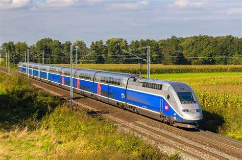
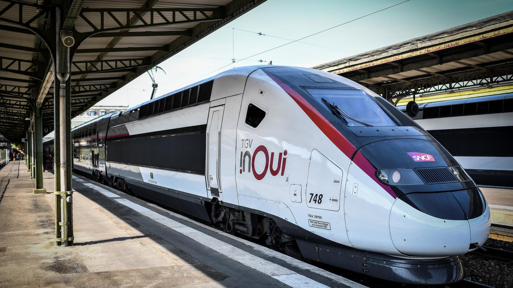
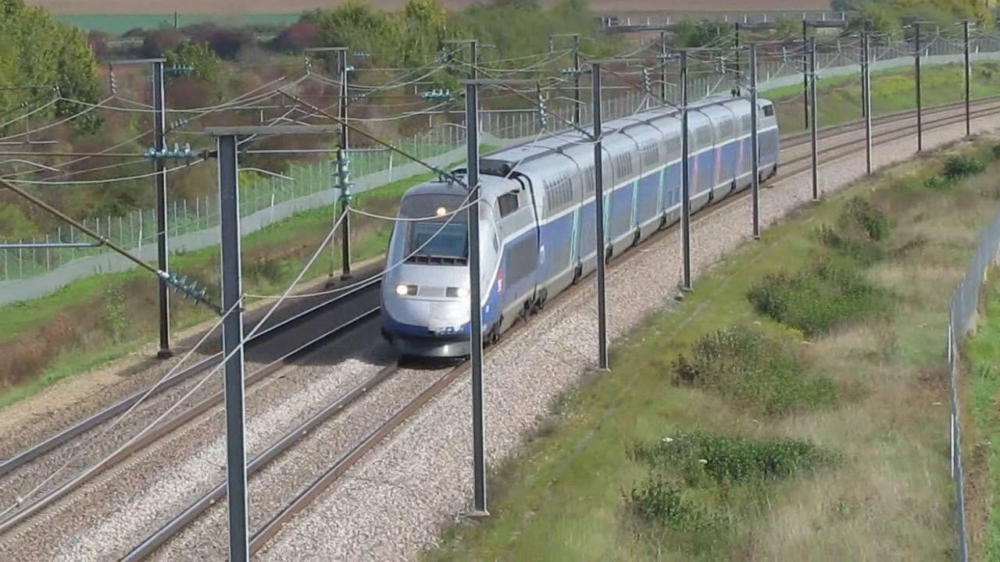

TGV



- TGV (sigle de train à grande vitesse) est une marque déposée de la SNCF pour désigner ses rames automotrices employées pour circuler à grande vitesse sur des lignes nouvelles conçues pour la grande vitesse. De conception française alimentée par caténaire et propulsée par des moteurs électriquesNote 1, elles circulent régulièrement à la vitesse de croisière de 270 km/h à 320 km/h selon les lignes à grande vitesse (LGV) parcourues.
- Depuis sa mise en service en 1981, un réseau de lignes nouvelles à grande vitesse a été construit en France, qui atteint 2 700 km en juillet 2018, le quatrième au monde par sa taille, après ceux de la Chine, du Japon et de l'Espagne1.
- Un record du monde de vitesse sur rail a été homologué par la rame V150. La rame était constituée des deux motrices du TGV POS no 4402, encadrant les deux remorques d'extrémité du TGV Duplex no 618. La rame a atteint 574,8 km/h le 3 avril 2007.